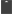
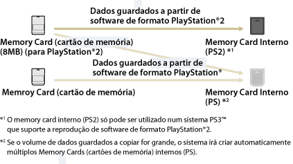

Jogo > Jogar software de formato PlayStation®2 / PlayStation® > Utilizar dados guardados em memory cards
Utilizar dados guardados em memory cards
Para utilizar dados guardados num memory card (cartão de memória) (8MB) (para PlayStation®2) ou num memory card para jogar, tem de copiar os dados para um memory card interno dentro do disco rígido. Tem de usar um adaptador para memory card (vendido em separado) para copiar os dados.
Atenção
- Algum software do formato PlayStation®2 ou PlayStation® poderá ter um comportamento no sistema PS3™ diferente que nos sistemas PlayStation®2 ou PlayStation® ou pode não funcionar correctamente no sistema PS3™.
- Além disso, alguns sistemas PS3™ não reproduzem software de formato PlayStation®2. Para obter mais informações, consulte [Tipos de discos reproduzíveis], visite o Web site da SCE da sua região ou consulte a documentação incluída no seu sistema PS3™.
1. |
Seleccione |
|---|---|
2. |
Ligue o adaptador para o memory card ao sistema PS3™ e insira um memory card.  (Memory Card (PS2)). |
3. |
Seleccione o ícone dos dados guardados que pretende copiar do memory card apresentado e, em seguida, prima o botão |
4. |
Seleccione [Copiar]. |
5. |
Atribuir Ranhuras |
 (Jogo) >
(Jogo) >  (Utilitário do Memory Card (PS / PS2)).
(Utilitário do Memory Card (PS / PS2)). (Memory Card (PS)) ou
(Memory Card (PS)) ou  (Criar Novo Memory Card Interno) e, em seguida, siga as instruções no ecrã para criar um memory card interno.
(Criar Novo Memory Card Interno) e, em seguida, siga as instruções no ecrã para criar um memory card interno.Notas
- Dependendo do tipo de dados, os dados guardados de um memory card (8MB) (cartão de memória) (para PlayStation®2) ou de um memory card são copiados para um memory card interno, como se descreve em baixo.
- Em alguns tipos de dados guardados, o processo de cópia pode demorar alguns minutos.
- Para copiar todos os dados guardados num memory card (8MB) (para PlayStation®2) ou num memory card, seleccione o memory card no passo 3, prima o botão
 e, em seguida, seleccione [Copiar] no menu de opções.
e, em seguida, seleccione [Copiar] no menu de opções. - Pode ser proibido copiar alguns dados guardados. Quando utilizar este tipo de dados num sistema PS3™, seleccione [Mudar] no passo 4. Os dados guardados serão mudados para o disco rígido e serão eliminados do memory card.
- Mais tarde, pode voltar a mudar os dados guardados novamente para o memory card.

Copiar dados guardados para um memory card
Copie os dados guardados do software do formato PlayStation®2 / PlayStation® guardados no disco rígido para um memory card ou memory card (8MB) (para PlayStation®2). Pode utilizar um adaptador para o memory card (vendido em separado) para copiar os dados.
1. |
Seleccione |
|---|---|
2. |
Ligue o adaptador para o memory card ao sistema PS3™ e insira um memory card. |
3. |
Seleccione o ícone dos dados guardados a serem copiados do |
4. |
Seleccione [Copiar]. |
 (Memory Card Interno (PS)) ou
(Memory Card Interno (PS)) ou  (Memory Card Interno (PS2)) onde os dados estão guardados e, em seguida, prima o botão
(Memory Card Interno (PS2)) onde os dados estão guardados e, em seguida, prima o botão Notas
- Não é possível copiar em grupo vários itens de dados guardados num memory card interno para um memory card.
- Pode ser proibido copiar alguns dados guardados. Quando utilizar este tipo de dados num sistema PS3™, seleccione [Mudar] no passo 4. Os dados guardados serão mudados para o disco rígido e serão eliminados do memory card interno.
- Mais tarde, pode voltar a mudar os dados guardados novamente para o memory card.